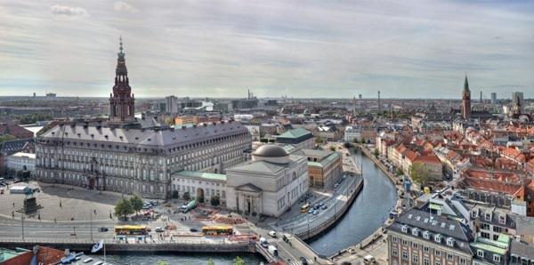
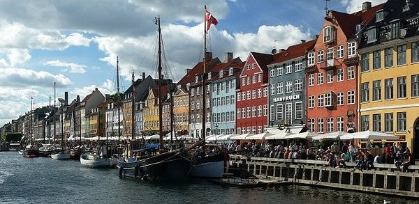

Столиця Kobenhavn
Копенгаген
Копенгаген (дан. Kobenhavn) — столиця та найбільше місто Данії, розташоване в Столичному регіоні на острові Зеландія і острові Амагер. Копенгаген — історичний центр країни. Перші згадки про місто датовані 1043 роком.
Історія
У 1167 р. близько села Хавн (дан. Havn) архієпископ Абсалон спорудив замок на захист від піратів і оточив Хавн укріпленнями. Пізніше замок розвинувся в данську столицю Копенгаген. Ще в XIX столітті данці м. Копенгаген називали Аксельштадтом, від одного з імен згаданого єпископа.
Загальний огляд
 Копенгаген розташований на берегах протоки Ересунн, яка розділяє Данію і Швецію. Остербро — найпрестижніший район Копенгагена. Респектабельність по-копенгагенськи це не гламур: люди люблять маленькі бари, у районі дуже багато парків. У західному районі Копенгагена Вестербро знаходиться одна з найдовших торгових вулиць у світі — її довжина дорівнює 1 морській милі.
Копенгаген відомий своїми палацами — всі на «борг»: Амалієнборг, Крістіансборґ, Розенборг, одним з найвідоміших у світі парків розваг — «Тіволі». А ще до в'їзду у столицю Данії вас будь-що знадять «замком Гамлета» Кронборг. Звісно, туристи вже «обходили» деякі вузлові місця маршрутів: у Копенгагені це пам'ятник русалці, вулиця Нугавн із дерев'яною забудовою тощо.
В 1637 році, у часи Крістіана IV, у Копенгагені споруджена Кругла вежа заввишки 36 метрів. У ній немає сходів — вгору веде пологий гвинтовий підйом. У 1716 році Петро Перший в'їхав на вершину вежі верхи на коні, який віз карету з майбутньою імператрицею Катериною Першою.
Аеропорт Каструп розташований практично на околиці Копенгагена.
Потягом через аеропорт Каструп тепер можна дістатися шведського міста Мальме, бо Данію зі Швецією сполучив кілька років тому Дрогден-тунель і найдовший у Європі Ересуннський міст.
 У 1671 році було прорито канал «Нова Гавань» (Нью Хавн) щоб з'єднати внутрішнє місто з морем. Наприкінці 18 — на початку 19 століття канал був центром торгівлі в Копенгагені. Більшість будинків попри канал мають більшу, ніж 300 років історію.
Перший виробничий цех всесвітньовідомої пивоварної компанії Карлсберг був відкритий в 1847 році в передмісті Копенгагена на пагорбі Велві.
Велосипедні стоянки можна побачити всюди. Виникла стійка асоціація: Копенгаген — місто велосипедів. Майже всі дороги мають окрему смугу для велосипедів. У Копенгагені замість громадського транспорту може бути значно зручніше користуватись велосипедом: його можна взяти на прокат.
У Копенгагені є невеличка незалежна територія Вільне місто Християнія (в західному регіоні Копенгагена Вестербро). 300 родин мешкають на території колишніх армійських казарм та не скоряються законам Королівства Данія. Вони мають власні правила, адміністрацію та прапор, у їхній «країні» дозволено продаж легких наркотиків.